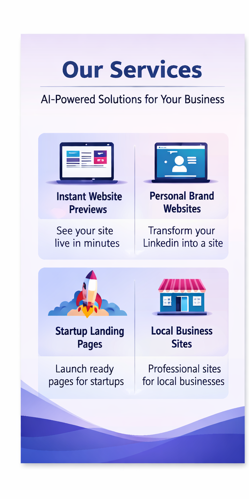

Business Website (48 hrs)
Modern websites for local businesses that need to generate leads, build trust, and feel more credible online.
What You Can Launch
LaunchPilot by Summitize is built for fast launches with clear structure, cleaner messaging, and a stronger first impression.
Launch Formats
Each format is designed to get you live quickly without sacrificing clarity, trust, or conversion flow.
Modern websites for local businesses that need to generate leads, build trust, and feel more credible online.
Turn your professional profile into a sharper online presence that supports authority, trust, and better inquiries.
Launch-ready landing pages designed to explain your product quickly and convert visitors into interested customers.
Visual Direction
LaunchPilot combines a faster AI-assisted workflow with polished visual design so your site feels current without becoming generic.

A visual snapshot of the launch formats most businesses, consultants, and founders need first.
Why It Works
Launch fast without waiting through long review cycles or bloated production timelines.
Use AI to sharpen structure and messaging while keeping the result specific to your business.
Every launch format is designed to feel premium on the screens your visitors use most.
Clear offers, sharper CTAs, and a stronger page flow help the website do real business work.